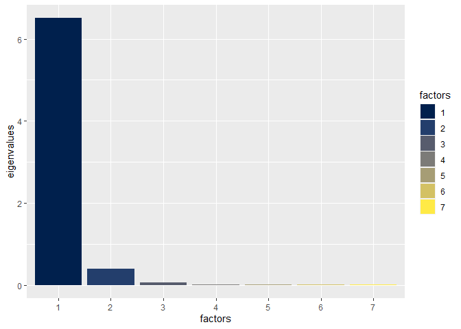

Installation
You can install the development version of tcopula from GitHub with:
# install.packages("devtools")
devtools::install_github("Reckziegel/tcopula")Case Study
Consider 7 constant maturities swap rates (1y, 2y, 5y, 7y, 10y, 15y and 30y) from 1995-05-01 to 2005-04-21, for a total of 2501 daily realizations.
library(tcopula)
data("swap")
head(swap, 2)
#> 1y 2y 5y 7y 10y 15y 30y
#> 1995-05-01 0.06630 0.06858 0.07166 0.07287 0.07452 0.07612 0.07796
#> 1995-05-02 0.06586 0.06792 0.07102 0.07232 0.07413 0.07573 0.07775
tail(swap, 2)
#> 1y 2y 5y 7y 10y 15y 30y
#> 2005-04-20 0.03595 0.03889 0.04279 0.04445 0.04637 0.04844 0.05008
#> 2005-04-21 0.03611 0.03905 0.04295 0.04460 0.04647 0.04864 0.05037To achieve stationarity, the risk-driver (swap) has to be differentiated once:
swap_diff <- swap[2:nrow(swap), ] - swap[1:nrow(swap) - 1, ]
head(swap_diff)
#> 1y 2y 5y 7y 10y 15y 30y
#> 1995-05-02 -0.00044 -0.00066 -0.00064 -0.00055 -0.00039 -0.00039 -0.00021
#> 1995-05-03 -0.00086 -0.00112 -0.00105 -0.00107 -0.00097 -0.00087 -0.00072
#> 1995-05-04 -0.00057 -0.00085 -0.00097 -0.00100 -0.00104 -0.00104 -0.00106
#> 1995-05-05 -0.00217 -0.00255 -0.00221 -0.00195 -0.00190 -0.00190 -0.00149
#> 1995-05-08 0.00018 0.00020 0.00005 0.00003 0.00011 0.00011 0.00011
#> 1995-05-09 -0.00090 -0.00114 -0.00100 -0.00097 -0.00094 -0.00094 -0.00079Because the first 3 principal components explain most of the variations in yield-curve (see here) it’s common to shrink the dimension of swap_diff to avoid noisy signals from eigenvalues that are not well defined.
By setting k = 3 in struct_t_mle(), the main sources of relevant information (aka level, steepness and curvature) are still taken into account, while the remaining factors are assumed to follow an isotropic structure:
fit <- struct_t_mle(x = swap_diff, k = 3, tolerance = 1e-10)
fit
#> $Nu
#> [1] 49
#>
#> $C
#> 1y 2y 5y 7y 10y 15y 30y
#> 1y 1.0000000 0.9728346 0.8947780 0.8684387 0.8281359 0.8105573 0.7479613
#> 2y 0.9728346 1.0000000 0.9560076 0.9354872 0.9000657 0.8808805 0.8107507
#> 5y 0.8947780 0.9560076 1.0000000 0.9877988 0.9729065 0.9602568 0.9049002
#> 7y 0.8684387 0.9354872 0.9877988 1.0000000 0.9850406 0.9767635 0.9330718
#> 10y 0.8281359 0.9000657 0.9729065 0.9850406 1.0000000 0.9891340 0.9627638
#> 15y 0.8105573 0.8808805 0.9602568 0.9767635 0.9891340 1.0000000 0.9755292
#> 30y 0.7479613 0.8107507 0.9049002 0.9330718 0.9627638 0.9755292 1.0000000As the output shows, the commovements in interest-rates variations are quite high. The optimal degree of freedom for swap_diff is v = 49, which may indicate that tick-tails are not an issue for this particular dataset.
The imposed structure stands-out in the image that follows:
library(ggplot2)
df <- data.frame(
factors = as.factor(1:7),
eigenvalues = eigen(fit$C)$values
)
ggplot(data = df, aes(x = factors, y = eigenvalues, fill = factors)) +
geom_col() +
scale_fill_viridis_d(option = "E")
References
Attilio Meucci (2020). Estimation of Structured t-Copulas, MATLAB Central File Exchange. Retrieved October 14, 2020.
Meucci, Attilio, Estimation of Structured T-Copulas (April 2008). Available at SSRN: https://www.ssrn.com/abstract=1126401 or http://dx.doi.org/10.2139/ssrn.1126401.